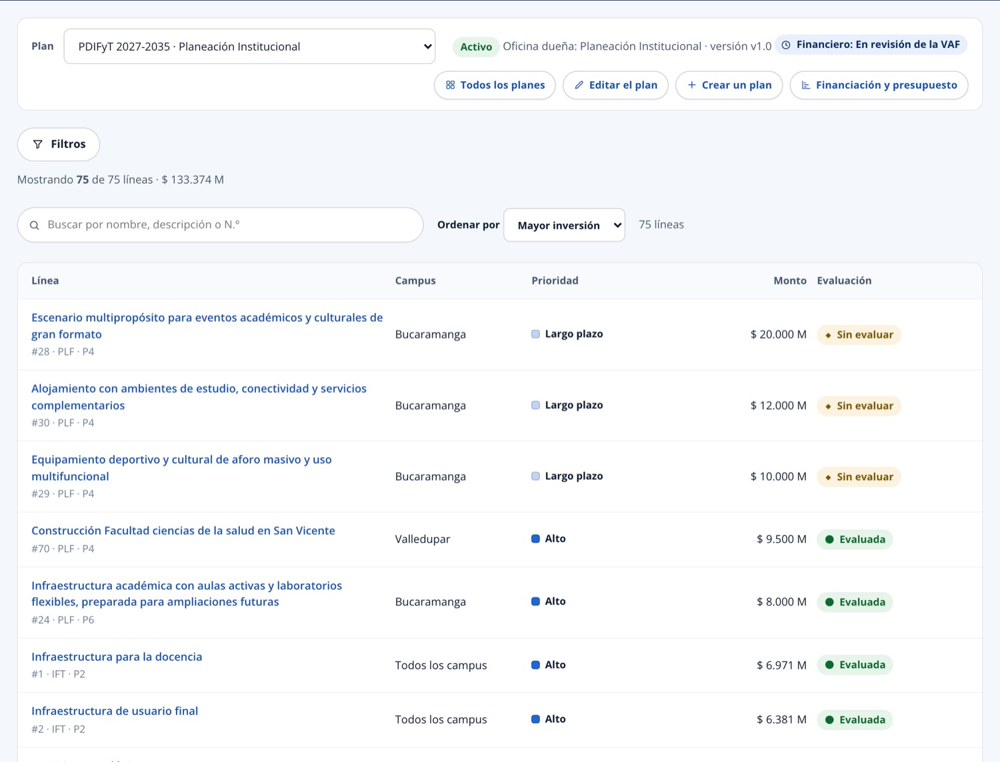
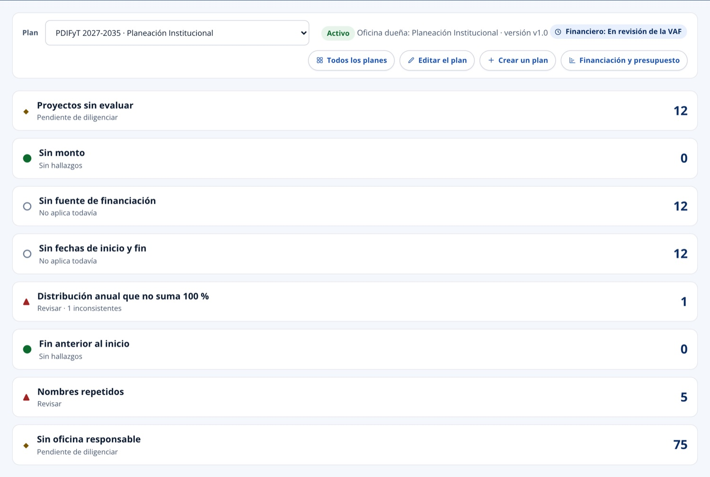
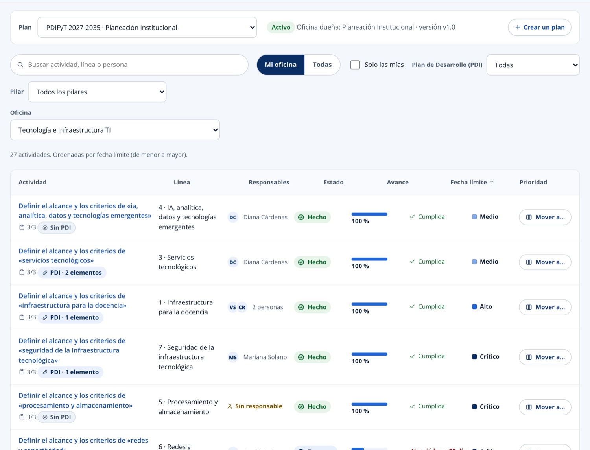
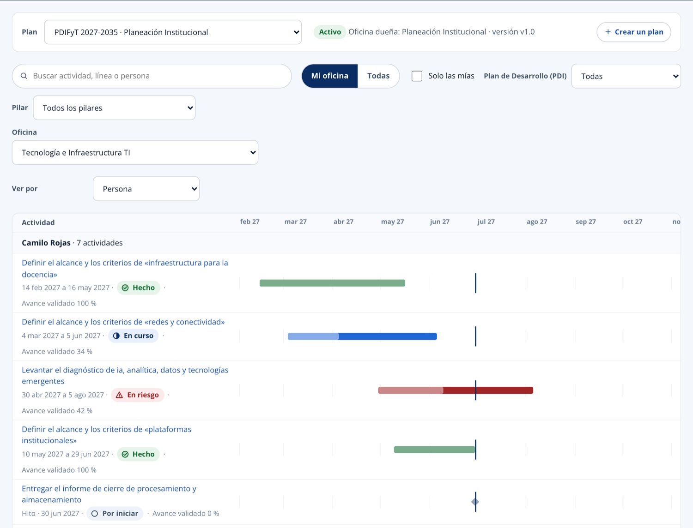

Cómo armar un plan, repartir el trabajo entre las oficinas, reportar avances y vigilar el presupuesto, paso a paso y con las pantallas del módulo.
00Qué es el módulo/admin/planeacion-seguimientopág. 4
01Quién es quién/admin/usuariospág. 7
02Administrador de planeación/crearpág. 11
03Gestor de oficina/planificacionpág. 21
04Colaborador/mis-tareaspág. 36
05Financiero y Director VAF/financiacionpág. 43
edición01Noviembre de 2026Oficina de Planeación Institucional · Universidad de Santander
Manual de usoPlaneación y Seguimiento
Contenido
Contenido
Diez capítulos. Busque el suyo por su papel: administrador, gestor de oficina, colaborador o financiero. Los capítulos 0 y 1 son para todos.
00Qué es el módulo4
Cómo encajan las piezas4
Cómo se ve la pantalla5
Glosario6
Cómo leer este manual6
01Quién es quién7
Los seis niveles del módulo7
Qué puede hacer cada nivel8
Reglas que la base de datos hace cumplir8
Cómo se asigna el nivel y la oficina9
La regla del mínimo9
Quién puede recibir una actividad10
02Administrador de planeación11
Crear un plan11
Cargar la planificación desde Excel14
Publicar la versión y qué pasa después17
Plazos de aviso17
La unidad de la VAF18
Todos los planes18
Leer el plan: Resumen, Proyectos, Cronograma y Calidad19
03Gestor de oficina21
Mi planificación21
Crear una actividad22
Importar actividades desde Excel26
Asignar y transferir27
Tablero, lista, cronograma y mis tareas28
Revisar los avances de su equipo30
Devolver una actividad y cerrarla a mano32
Riesgos y acciones33
La actividad por dentro33
Plazos de aviso de su oficina34
Edición 01 · Noviembre de 202602
Manual de usoPlaneación y Seguimiento
Contenido
04Colaborador36
Mis tareas36
Reportar un avance37
Qué pasa después de enviar41
En el teléfono41
05Financiero y Director VAF43
La cola «Por evaluar»43
Evaluar un plan45
Financiación por línea, desde Excel46
Presupuesto y ejecución47
El libro de movimientos49
Vigilancia y alertas50
Configuración: la unidad de la VAF51
06Correos53
Avisos de las actividades53
Avisos de la VAF54
Qué dice el correo54
07Flujos completos55
De un plan a la ejecución55
Qué pasa cuando algo se tuerce56
Los cinco estados de una actividad56
08Preguntas frecuentes57
Acceso y permisos57
Actividades y avances57
Excel y planes58
Avisos y presupuesto59
09Apéndice60
Plantilla del plan: hoja «Líneas del plan»60
Plantilla de actividades: hoja «Actividades»61
Plantillas de la VAF61
Glosario de estados62
Edición 01 · Noviembre de 202603
Manual de usoPlaneación y Seguimiento
Qué es el módulo
0
Capítulo cero
Qué es el módulo
Planeación y Seguimiento reúne los planes de la universidad, el trabajo de cada oficina y el presupuesto en un mismo lugar.
/admin/planeacion-seguimiento
00
El módulo sirve para tres cosas: guardar un plan institucional con sus líneas y sus versiones, repartir ese plan en actividades que cada oficina ejecuta, y ver cuánto se avanzó y cuánto dinero se gastó frente a lo aprobado.
Vive en la intranet, en planeacion.udes.edu.co/admin/planeacion-seguimiento. Maneja varios planes a la vez: el PDIFyT 2027-2035 de Planeación Institucional, el plan de una oficina como Tecnología, o el de otra dependencia. Cada plan tiene una oficina dueña.
Pilo diceHola, soy Pilo. Voy a acompañarle por el manual. Cuando algo conviene saberlo antes de seguir, lo verá en un globo como este.
Cómo encajan las piezas
Todo el módulo sigue una cadena de ocho eslabones. Cada capítulo del manual explica uno o varios, y dice quién los hace.
01PlanNombre, años, oficina dueña, plantilla y pilares.
02LíneasCada fila del plan, con su monto, prioridad, campus y fechas.
03VersionesUna foto completa del plan. La publicada queda congelada.
04ActividadesEl trabajo de una oficina para sacar adelante una línea.
05AsignacionesQué persona de la oficina tiene cada actividad.
06AvancesEl colaborador reporta cuánto lleva, con evidencias.
07RevisiónEl gestor valida o devuelve el avance. Solo el validado cuenta.
08PresupuestoLa VAF evalúa la financiación y vigila la ejecución por línea.
Edición 01 · Noviembre de 202604
Manual de usoPlaneación y Seguimiento
Qué es el módulo
0
Dos ideas sostienen todo lo demás. Primero, el trabajo se mide por avances validados por otra persona: nadie da por bueno su propio reporte. Segundo, lo que ya se publicó o se registró no se edita; se corrige con otro registro. Así queda un historial que sirve para revisar.
Pilo diceSi duda de quién hace qué, mire primero el capítulo 1. Allí está la tabla de permisos por papel.
Cómo se ve la pantalla
Todas las pantallas del módulo comparten la misma estructura. Las listas y los tableros muestran la barra del plan; los formularios y los detalles se abren a pantalla completa, con el botón «Regresar» arriba, y nunca en ventanas emergentes.
Una pestaña por pantalla. Quien no tiene permiso para una sección no la ve: «Asignar» solo aparece para gestores y administradores.
2
El plan activo
El menú muestra los planes que usted puede ver, con su oficina. El módulo recuerda el último que eligió.
3
«Todos los planes»
El tablero con el seguimiento de todos los planes. Lo ven el administrador, el aprobador, el lector y el financiero.
4
«Crear un plan» y «Editar el plan»
Abren el asistente del plan. Lo usa el administrador y, para su propia oficina, el gestor.
5
«Financiación y presupuesto»
La pantalla de la VAF. La ve el financiero y el administrador.
6
Estado del plan
Activo o archivado, oficina dueña, versión vigente y estado financiero.
Las capturas usan datos de demostración: nombres, oficinas, cifras y fechas son ficticios. El encabezado azul de la demostración es más simple que el de la intranet.
Edición 01 · Noviembre de 202605
Manual de usoPlaneación y Seguimiento
Qué es el módulo
0
Glosario
Término
Qué significa
Plan
Contenedor con nombre, años de vigencia, oficina dueña, plantilla de columnas y pilares. Ejemplo: «PDIFyT 2027-2035».
Línea
Una fila del plan. Tiene un número estable («N.º») que no cambia entre versiones.
Versión
Foto completa del plan. Está en borrador o publicada. La vigente es la última publicada.
Oficina
Una unidad de la universidad. Es la responsable de líneas y de actividades.
Actividad
Tarea concreta de una oficina. Puede contribuir a una línea del plan o ser propia de la oficina.
Cubo
Columna del tablero: Por iniciar, En curso, En riesgo, En revisión y Hecho.
Avance
Reporte de cuánto lleva una actividad, en lo físico y, si aplica, en lo financiero, con nota y evidencias.
Validar
Aceptar un avance. Solo lo hace el gestor, y nunca sobre su propio reporte.
Gestor
Jefe de la oficina para este módulo. Asigna, valida y cierra.
Colaborador
Persona de la oficina que recibe actividades y reporta avances.
PDI
Plan de Desarrollo Institucional. Las actividades se conectan a sus pilares y líneas de acción, o declaran que no tienen conexión.
VAF
Vicerrectoría Administrativa y Financiera. Evalúa la financiación de los planes y vigila la ejecución del presupuesto.
Línea base
La versión publicada y vigente de un plan, contra la que se mide el seguimiento.
Qué todavía no estáLas solicitudes de cambio a un plan ya publicado, la comparación entre versiones, la aprobación de cambios por el aprobador y los cortes de seguimiento llegan en fases posteriores. La pantalla «Versiones» ya lo avisa. Hoy el aprobador consulta; no decide.
Cómo leer este manual
Cada capítulo corresponde a un papel. Lea el capítulo 1 para saber cuál es el suyo y vaya al que le toca. Las capturas tienen círculos amarillos con número: cada número se explica en la lista que sigue a la imagen. Lo que aparece entre comillas angulares, como «Crear actividad», es el texto exacto del botón o del campo. Las rutas, como /admin/planeacion-seguimiento/tablero, son las direcciones dentro de la intranet. Los estados llevan siempre un símbolo y una palabra: CompletoPendienteEn riesgo.
Edición 01 · Noviembre de 202606
Manual de usoPlaneación y Seguimiento
Capítulo 1 · Quién es quién
1
Capítulo 1
Quién es quién
El módulo tiene seis niveles de acceso y tres papeles dentro de una oficina. Aquí se ve qué puede hacer cada uno y cómo se asigna.
/admin/usuarios
01
Su acceso depende de dos cosas que no son lo mismo: el nivel que le da su rol de acceso en todo el módulo, y el papel que tiene en cada oficina. El poder que usted tiene en una oficina es el menor de los dos.
Los seis niveles del módulo
Administrador de planeación
Crea planes, carga la planificación por Excel, publica versiones y ve todo. También puede operar lo financiero para revisar y probar.
Normalmente: Planeación Institucional.
Gestor de oficina
Jefe de la oficina en el módulo. Crea y asigna actividades, revisa los avances, cierra y fija los plazos de aviso de su oficina. Puede crear planes de su oficina.
Papel en la oficina: Gestor.
Colaborador
Recibe actividades. Las mueve hasta «En revisión», reporta avances con evidencias y registra riesgos de lo que tiene asignado.
Papel en la oficina: Contribuyente.
Financiero (VAF)
Ve todos los planes en lectura. Evalúa la financiación de cada plan y línea, registra la ejecución del presupuesto y vigila las alertas. No crea actividades ni valida avances.
Normalmente: Director VAF.
Aprobador
Ve todos los planes y la bitácora, y puede comentar. Decidirá los cambios al plan cuando existan las solicitudes de cambio; hoy consulta.
Nunca decide sobre lo propio.
Lector o directivo
Ve el resumen, los proyectos, el cronograma, las versiones y el presupuesto, solo para leer. No comenta ni modifica nada.
Papel en la oficina: Consulta.
Pilo diceUn mismo rol de acceso puede dar el nivel «Gestor de oficina». Pero para operar en una oficina, además hay que pertenecer a ella con la función «Gestor».
Edición 01 · Noviembre de 202607
Manual de usoPlaneación y Seguimiento
Capítulo 1 · Quién es quién
1
Qué puede hacer cada nivel
Capacidad
Admin.
Aprob.
Financ.
Gestor
Colab.
Lector
Ver resumen, proyectos y seguimiento
Sí
Sí
Sí
Sí
Sí
Sí
Ver «Todos los planes»
Sí
Sí
Sí
—
—
Sí
Crear planes, cargar y publicar versiones
Sí
—
—
Planes de su oficina
—
—
Asignar, transferir y cargar actividades por Excel
Sí
—
—
Su oficina
—
—
Crear, editar y eliminar actividades
Sí
—
—
Su oficina
—
—
Mover actividades entre cubos
Sí
—
—
Su oficina
Las suyas, hasta «En revisión»
—
Reportar avance con evidencia
Sí
—
—
Su oficina
Las asignadas
—
Validar o devolver un avance
Respaldo del gestor
—
—
Nunca el propio
—
—
Cerrar una actividad (cierre administrativo)
Sí
—
—
Sí
—
—
Registrar riesgos y acciones
Sí
—
—
Su oficina
Crea riesgos; marca sus acciones
—
Comentar
Sí
Sí
—
Sí
Sí
—
Plazos de aviso de una oficina
Sí
—
—
Su oficina
—
—
Evaluar la financiación y registrar la ejecución
Para probar
—
Sí
—
—
—
Ver el presupuesto y sus alertas
Sí
Sí
Sí
Su oficina
Su oficina
Sí
Sí es un permiso completo. Las celdas en ámbar tienen un límite que se dice en la celda. La misma matriz está en la pantalla «Roles y permisos» del módulo.
Reglas que la base de datos hace cumplir
Nadie valida lo propio. Si el gestor reportó un avance, lo valida un administrador del módulo.
Un gestor solo asigna a personas de su oficina. La base lo rechaza aunque la pantalla lo permitiera.
Lo publicado no se edita. Una versión publicada queda congelada.
Cada avance guarda la versión del plan vigente cuando se reportó.
Edición 01 · Noviembre de 202608
Manual de usoPlaneación y Seguimiento
Capítulo 1 · Quién es quién
1
El registro de eventos solo se añade. Cada acción deja una fila que no se edita ni se borra. La pestaña «Historial» de la actividad muestra la parte que le toca.
El presupuesto lo registra solo la VAF. Lo registrado no se edita: se anula con otro movimiento.
Cómo se asigna el nivel y la oficina
Hacen falta dos cosas, y las dos se hacen en Usuarios y roles de la intranet. Las hace el administrador general de la plataforma.
1
Dé el nivel con el rol de acceso
Entre a /admin/usuarios/roles, elija el rol y marque el módulo «Planeación y Seguimiento» con su pantalla del mismo nombre. Aparece el grupo «Nivel en Planeación y Seguimiento»: elija Lector, Colaborador, Gestor, Aprobador, Financiero o Administrador.
2
Asigne el rol a la persona
En /admin/usuarios abra a la persona y póngale ese rol de acceso. Sin el nivel, o sin la pantalla marcada, el módulo le muestra «Sin acceso».
3
Ubique a la persona en su oficina
En la ficha de la persona agregue su unidad (la oficina) y elija la Función: Gestor, Contribuyente o Consulta. Es lo que el módulo llama gestor, colaborador y lector.
4
Indique el campus, si aplica
Cada pertenencia puede tener un campus. Sin campus, la persona cuenta para todos.
La regla del mínimo
El poder en una oficina es el menor entre el nivel del rol de acceso y la función en la oficina. Estos ejemplos lo aclaran:
Nivel del rol
Función en la oficina
Poder en esa oficina
Gestor
Consulta
Lector: ve, no opera
Colaborador
Gestor
Colaborador: el nivel del rol limita
Gestor
Gestor en la unidad madre y Contribuyente en la hija
Colaborador en la hija: manda la pertenencia más cercana
Gestor
Gestor de la unidad madre
Gestor en toda la rama de unidades que cuelgan de ella
Sin nivel, o sin la pantalla marcada
Cualquiera
Ninguno: no ve nada, aunque sea miembro
Edición 01 · Noviembre de 202609
Manual de usoPlaneación y Seguimiento
Capítulo 1 · Quién es quién
1
Lector y aprobador ven todas las oficinas en modo lectura. Gestor y colaborador solo ven las oficinas donde tienen pertenencia, propia o heredada de una unidad superior.
Quién puede recibir una actividad
Una persona puede recibir actividades de una oficina si pertenece a ella (o a una unidad superior) con función Gestor o Contribuyente, está activa y su nivel del módulo es Colaborador o más. Quien tiene la función Consulta, el aprobador y el financiero no reciben actividades.
CampusSi una persona tiene campus y la actividad es de otro campus distinto, la pantalla pide confirmación antes de asignar. Una actividad sin campus vale para todos. Al confirmar queda anotado en la bitácora.
Pilo dice¿Ve el módulo pero no ve sus actividades? Casi siempre falta la pertenencia a la oficina. Pida al administrador de usuarios que le agregue su unidad.
Edición 01 · Noviembre de 202610
Manual de usoPlaneación y Seguimiento
Capítulo 2 · Administrador de planeación
2
Capítulo 2
Administrador de planeación
Cómo crear un plan, cargarlo desde Excel, publicar su línea base y seguir todos los planes de la universidad.
/crear
02
El administrador de planeación pone en marcha cada plan: lo crea, carga sus líneas desde un libro de Excel, publica la primera versión y vigila el conjunto. Este capítulo sigue ese orden.
Crear un plan
Abra «Crear un plan» en la barra del plan. Es un asistente de cinco pasos, a pantalla completa. Lo que usted escribe se guarda solo en su equipo mientras avanza; si cierra la pantalla, lo recupera al volver.
Las capturas usan datos de demostración: nombres, oficinas, cifras y fechas son ficticios. El encabezado azul de la demostración es más simple que el de la intranet.
Edición 01 · Noviembre de 202611
Manual de usoPlaneación y Seguimiento
Capítulo 2 · Administrador de planeación
2
1
Datos del plan
Escriba el nombre (por ejemplo «PDIFyT 2027-2035»), el año inicial, el año final y, si quiere, una descripción. El nombre no se puede repetir.
2
Oficina dueña y alcance
Elija la oficina que responde por el plan. Es obligatoria: las líneas que no traigan oficina heredan esta.
El alcance puede ser «De una oficina» (la opera esa oficina, no necesita aprobación de Planeación y queda en borrador hasta publicar su primera versión) o «Institucional» (reparte líneas entre varias oficinas, como el PDIFyT). Solo el administrador crea planes institucionales; un gestor solo puede crear planes de su propia oficina.
Las capturas usan datos de demostración: nombres, oficinas, cifras y fechas son ficticios. El encabezado azul de la demostración es más simple que el de la intranet.
Marque qué columnas lleva el Excel de este plan y cuáles son obligatorias. «N.º» y «Nombre» siempre lo son. Debajo puede editar las listas del plan: clasificación, prioridad, resultado y fuente de financiación.
4
Pilares del plan
Elija pilares del PDI institucional, con el buscador, o agregue pilares propios con su código y nombre. Las líneas del Excel se validan contra esta lista.
5
Revisar y crear
Compruebe el resumen y pulse «Crear el plan». El plan aparece en el menú del plan activo.
Las capturas usan datos de demostración: nombres, oficinas, cifras y fechas son ficticios. El encabezado azul de la demostración es más simple que el de la intranet.
Pilo diceSi no cambia la plantilla, el plan usa las columnas del PDIFyT: obligatorias el N.º, el nombre, el campus, el pilar y la prioridad. Todo lo demás puede ir vacío.
Tenga en cuentaLos planes creados antes de que existiera la oficina dueña muestran «Sin oficina asignada». El administrador la fija en «Editar el plan»; sin oficina, no se puede cargar la planificación.
Cargar la planificación desde Excel
Abra «Cargar la planificación» (aparece arriba a la derecha cuando el plan aún no tiene versión vigente). El archivo se lee en su navegador y no sale de allí hasta el último paso. Son cuatro pasos.
Las capturas usan datos de demostración: nombres, oficinas, cifras y fechas son ficticios. El encabezado azul de la demostración es más simple que el de la intranet.
Pulse «Descargar la plantilla». El libro trae instrucciones, listas desplegables y las columnas de este plan. Llénelo (hasta 300 líneas, 5 MB) y elíjalo. Amarillo es obligatorio, azul claro es opcional y gris no se toca.
2
Revise lo leído
La pantalla dice cuántas líneas entendió y las muestra por campus y por prioridad, con una vista previa. Aún no se creó nada.
3
Corrija
Cada problema dice la fila y la columna, y cómo arreglarlo. Las filas con error no se importan. Puede corregir su libro y elegirlo otra vez, o marcar que entiende que esas filas quedan fuera y seguir con las que están listas.
4
Cree la versión borrador
Pulse el botón final. Se crea la versión «v1.0» en borrador. Todavía no es la línea base.
Las capturas usan datos de demostración: nombres, oficinas, cifras y fechas son ficticios. El encabezado azul de la demostración es más simple que el de la intranet.
Los errores más comunes son un campus que no existe en la lista del portal, una prioridad distinta de Crítico, Alto, Medio o Largo plazo, un N.º repetido y fechas fuera de los años del plan. La plantilla ya trae las listas para evitarlos. Si el libro no es la plantilla del plan, la pantalla lo dice.
Pilo diceUn borrador se puede volver a cargar: la carga nueva reemplaza el borrador entero. Una versión ya publicada, no.
Las capturas usan datos de demostración: nombres, oficinas, cifras y fechas son ficticios. El encabezado azul de la demostración es más simple que el de la intranet.
Edición 01 · Noviembre de 202616
Manual de usoPlaneación y Seguimiento
Capítulo 2 · Administrador de planeación
2
Publicar la versión y qué pasa después
En «Versiones» verá el borrador con el botón «Publicar v1.0». Se abre una página con el resumen y una confirmación en la misma página. Al confirmar, la versión pasa a publicada y vigente, queda congelada y se le calcula una huella para comprobar que no cambió.
Desde ese momento las oficinas pueden crear actividades sobre las líneas del plan.
Se abre una evaluación pendiente para la VAF y se avisa por correo a su equipo. La evaluación no frena a las oficinas.
Las líneas sin columna «Oficina» heredaron la oficina dueña del plan.
Cambios después de publicarHoy una versión publicada no se reemplaza con un archivo ni se compara con otra. Las solicitudes de cambio, el borrador sobre la vigente, la comparación y la restauración llegan en la fase 4. Hasta entonces, la v1.0 es la línea base del plan.
Plazos de aviso
Los avisos de vencimiento y de validación usan plazos que se pueden ajustar por oficina. Cada oficina usa los generales (7, 3 y 0 días antes; hasta 3 avisos de vencida; 72 horas para validar un avance) o sus propios. En «Cómo te avisamos» elija la oficina y pulse «Cambiar los plazos de esta oficina».
Tenga en cuentaLa pantalla edita los plazos de cada oficina. Los plazos generales viven en la base de datos y hoy se cambian allí, con la función ps_config_guardar; el módulo no tiene una pantalla para ellos.
Las capturas usan datos de demostración: nombres, oficinas, cifras y fechas son ficticios. El encabezado azul de la demostración es más simple que el de la intranet.
Edición 01 · Noviembre de 202617
Manual de usoPlaneación y Seguimiento
Capítulo 2 · Administrador de planeación
2
La unidad de la VAF
Los avisos financieros llegan a las personas de la unidad que usted designe como VAF, siempre que tengan nivel Financiero o Administrador. Se elige en «Financiación y presupuesto», pestaña «Configuración». Si no hay unidad designada, los avisos van a todos los financieros. El capítulo 5 lo explica.
Todos los planes
«Todos los planes» es el tablero del administrador (también lo ven el aprobador, el lector y el financiero, en lectura). Reúne en una pantalla lo que pasa en cada plan.
Por estado del plan, salud, oficina y año; y ordene como prefiera.
2
Lea los totales
Planes, líneas, actividades, vencidas y avance físico validado de lo que ve.
3
Revise las alertas
Plan sin versión vigente, plan de oficina en borrador hace más de 30 días, oficina sin responsables, actividades vencidas y avances sin validar a tiempo. Cada alerta lleva a su plan.
Las capturas usan datos de demostración: nombres, oficinas, cifras y fechas son ficticios. El encabezado azul de la demostración es más simple que el de la intranet.
Edición 01 · Noviembre de 202618
Manual de usoPlaneación y Seguimiento
Capítulo 2 · Administrador de planeación
2
Más abajo hay una tarjeta por plan, una matriz de plan por oficina con el avance escrito en cada celda, la comparación del avance por oficina y el ritmo semanal de avances validados. Los cálculos los hace la base de datos con el mismo criterio de «avance validado» que el resto del módulo.
Pilo diceLa salud de un plan es roja si las actividades vencidas llegan al 30 % de las activas, y amarilla si hay vencidas, actividades en riesgo o avances sin validar por más de 72 horas.
Leer el plan: Resumen, Proyectos, Cronograma y Calidad
Resumen. Líneas, inversión por año, prioridad, pilar, campus y fuente, con filtros que se conservan. «M» quiere decir millones de pesos.
Proyectos. Las líneas con búsqueda, filtros y orden. Cada una se abre a pantalla completa con su detalle.
Cronograma. Cada línea entre su año de inicio y su año de fin.
Calidad de datos. Qué falta diligenciar, qué aún no aplica y qué es inconsistente (por ejemplo, una distribución anual que no suma 100 %). Un monto o una fecha que falta queda vacío: el módulo no inventa cifras.
Las capturas usan datos de demostración: nombres, oficinas, cifras y fechas son ficticios. El encabezado azul de la demostración es más simple que el de la intranet.
Edición 01 · Noviembre de 202619
Manual de usoPlaneación y Seguimiento
Capítulo 2 · Administrador de planeación
2
…/planeacion-seguimiento/proyectos

…/planeacion-seguimiento/calidad

Las capturas usan datos de demostración: nombres, oficinas, cifras y fechas son ficticios. El encabezado azul de la demostración es más simple que el de la intranet.
Edición 01 · Noviembre de 202620
Manual de usoPlaneación y Seguimiento
Capítulo 3 · Gestor de oficina
3
Capítulo 3
Gestor de oficina
El gestor convierte las líneas del plan en actividades, las reparte en su equipo, valida los avances y cuida los plazos.
/planificacion
03
Si usted es el jefe de una oficina en el módulo, su trabajo tiene un ritmo: crear las actividades de sus líneas, asignarlas, mirar cómo avanzan y validar lo que su equipo reporta. Todo sale de la pantalla «Mi planificación».
Mi planificación
Elija su oficina arriba (si es gestor de varias). La pantalla resume dónde está parada. Tiene dos botones: «Crear actividad» y «Importar desde Excel».
Las capturas usan datos de demostración: nombres, oficinas, cifras y fechas son ficticios. El encabezado azul de la demostración es más simple que el de la intranet.
Edición 01 · Noviembre de 202621
Manual de usoPlaneación y Seguimiento
Capítulo 3 · Gestor de oficina
3
1
Las cifras de la oficina
Líneas a su cargo, actividades, vencidas, sin responsable, en riesgo y avance validado.
2
Conexión con el PDI
Cuántas actividades están conectadas al Plan de Desarrollo Institucional, cuántas dicen «sin conexión» y cuántas siguen «sin definir» (las anteriores a este dato).
3
Por validar en esta oficina
Los avances que reportó su equipo. Desde aquí los revisa o los valida en lote.
Más abajo, la planificación lista las líneas del plan a cargo de la oficina, cada una con su monto, su prioridad y cuántas actividades tiene. «Sin actividades» le recuerda lo que falta.
Crear una actividad
Una actividad es el trabajo concreto con el que su oficina saca adelante una línea del plan. El formulario tiene cinco pasos y se guarda solo en su equipo mientras escribe.
Las capturas usan datos de demostración: nombres, oficinas, cifras y fechas son ficticios. El encabezado azul de la demostración es más simple que el de la intranet.
Edición 01 · Noviembre de 202622
Manual de usoPlaneación y Seguimiento
Capítulo 3 · Gestor de oficina
3
1
Qué se va a hacer
Elija la línea del plan a la que contribuye, o «Actividad propia de la oficina». Escriba un título que empiece con un verbo («Levantar el inventario de aulas») y, si quiere, una descripción.
2
Plan de Desarrollo Institucional
Es obligatorio decidir: la actividad se conecta con el PDI (y entonces elija uno o varios pilares o líneas de acción) o no tiene conexión.
Busque un pilar o una línea de acción con el buscador. Si marca «Todo el pilar», la actividad se conecta con el pilar sin una línea concreta. Puede elegir hasta 12 elementos. Si elige «No tiene conexión con el PDI», es una actividad de la operación de la oficina.
Las capturas usan datos de demostración: nombres, oficinas, cifras y fechas son ficticios. El encabezado azul de la demostración es más simple que el de la intranet.
Fecha de inicio y de fin, prioridad (Crítico, Alto, Medio o Bajo) y campus. Si es un hito, un momento como una entrega o una firma, solo lleva la fecha de fin. Las fechas deben caer dentro de los años del plan.
4
Quién la hace
Elija a una o varias personas del equipo. Verá la carga de cada una: activas, vencidas. También puede dejarla sin responsable y asignarla después.
5
Revisar y crear
Compruebe todo. La pantalla dice a quién se le avisará por correo. Al crear, la actividad queda «Por iniciar».
Las capturas usan datos de demostración: nombres, oficinas, cifras y fechas son ficticios. El encabezado azul de la demostración es más simple que el de la intranet.
Pilo diceReparta con la carga a la vista. Quien ya tiene una actividad vencida quizá necesite ayuda antes de recibir otra.
Si la persona es de otro campusSi la persona tiene un campus distinto al de la actividad, la pantalla se detiene y pide confirmación antes de asignar. Al confirmar, la asignación se hace y queda anotado. Una actividad de «Todos los campus» no genera esa pregunta.
Las capturas usan datos de demostración: nombres, oficinas, cifras y fechas son ficticios. El encabezado azul de la demostración es más simple que el de la intranet.
Edición 01 · Noviembre de 202625
Manual de usoPlaneación y Seguimiento
Capítulo 3 · Gestor de oficina
3
Importar actividades desde Excel
Si tiene muchas actividades, use «Importar desde Excel». Son cuatro pasos y el archivo se lee en su navegador. La plantilla es propia de su oficina: trae sus líneas del plan, sus responsables por correo, la prioridad y el campus como listas desplegables, y una hoja «PDI» de consulta con los códigos.
Hasta 300 actividades y 5 MB por libro. Las dos primeras filas son ejemplos y no se importan.
Los responsables se escriben por correo y deben ser de su oficina. Puede poner hasta tres por actividad.
La conexión con el PDI es obligatoria: «Con PDI» (con el pilar o la línea de acción) o «Sin conexión».
Una fila con error no se importa; la pantalla dice cuál es y cómo arreglarla. Puede corregir el libro o seguir con las filas buenas.
Se rechazan las filas repetidas en la hoja y las que ya existen en su oficina.
Las capturas usan datos de demostración: nombres, oficinas, cifras y fechas son ficticios. El encabezado azul de la demostración es más simple que el de la intranet.
Edición 01 · Noviembre de 202626
Manual de usoPlaneación y Seguimiento
Capítulo 3 · Gestor de oficina
3
Asignar y transferir
«Asignar» muestra su equipo con la carga de cada persona (activas, vencidas, en riesgo) y las actividades sin responsable. Puede asignar una actividad a una persona, o varias a la vez: la asignación masiva admite hasta 100 actividades y es de todo o nada. Solo recibe actividades quien pertenece a su oficina como gestor o colaborador.
Para transferir una actividad a otra persona, ábrala y pulse «Transferir…». Elija a quién se le quita y a quién se le pasa, y escriba el motivo: mínimo 20 caracteres. El motivo lo leen las dos personas y queda en el historial. La pantalla dice antes a quién se avisará: quien recibe, quien cede y, en copia, usted.
Las capturas usan datos de demostración: nombres, oficinas, cifras y fechas son ficticios. El encabezado azul de la demostración es más simple que el de la intranet.
Las mismas actividades se ven de cuatro maneras. Todas tienen los mismos filtros: buscar, «Mi oficina» o «Todas», «Solo las mías», conexión con el PDI y pilar.
Las capturas usan datos de demostración: nombres, oficinas, cifras y fechas son ficticios. El encabezado azul de la demostración es más simple que el de la intranet.
Cubos: Por iniciar, En curso, En riesgo, En revisión y Hecho. Agrupe por estado, persona, línea del plan, prioridad o campus. Arrastre una tarjeta o use «Mover a…», que también sirve con teclado.
2
Lista
Las mismas actividades en una tabla que se ordena por cualquier columna. En pantallas pequeñas cada fila es una tarjeta.
3
Cronograma de actividades
Las actividades en el tiempo, por persona, por oficina o por actividad.
4
Mis tareas
Lo que usted tiene asignado: vencidas, próximas (14 días), más adelante y hechas.
Una tarjeta le dice el estado, la prioridad, si venció o cuántos días faltan, el avance validado, la lista de chequeo y la conexión con el PDI. Al mover una actividad a «En revisión» se abre el reporte de avance; al moverla a «Hecho» se abre la revisión del avance que espera, o el cierre administrativo si no hay ninguno.
Las capturas usan datos de demostración: nombres, oficinas, cifras y fechas son ficticios. El encabezado azul de la demostración es más simple que el de la intranet.
Edición 01 · Noviembre de 202629
Manual de usoPlaneación y Seguimiento
Capítulo 3 · Gestor de oficina
3
…/planeacion-seguimiento/lista

…/planeacion-seguimiento/cronograma-act

Revisar los avances de su equipo
Cuando alguien reporta un avance, usted recibe un correo y la actividad pasa a «En revisión». La cola «Por validar» (también en su planificación) lista los avances, el más antiguo primero, con el tiempo que llevan esperando. Pasadas 72 horas sin revisar, el avance se marca con plazo vencido y le llega un aviso.
Las capturas usan datos de demostración: nombres, oficinas, cifras y fechas son ficticios. El encabezado azul de la demostración es más simple que el de la intranet.
Edición 01 · Noviembre de 202630
Manual de usoPlaneación y Seguimiento
Capítulo 3 · Gestor de oficina
3
1
Valide en lote
Marque los avances que no necesitan comentario y pulse «Validar los elegidos…». Se confirma en la misma página. Admite hasta 50 y es de todo o nada: si uno falla, no se valida ninguno.
2
Revise uno
Pulse «Revisar». Verá el porcentaje, la nota, las evidencias (enlaces y archivos que se descargan), el avance anterior y qué pasará si lo valida.
En la pantalla de revisión, al final, decida: «Validar este avance» lo da por bueno. «Devolver con una nota…» exige una nota de al menos 20 caracteres que dice qué corregir; quien reportó recibe un correo con ella.
Al validar, el avance pasa a ser el vigente de la actividad. Si el físico llega a 100 %, la actividad queda «Hecha». Si no, vuelve a «En curso», o sigue «En riesgo» cuando tiene un riesgo Crítico o Alto abierto. Un avance validado no puede bajar el porcentaje físico del anterior.
Las capturas usan datos de demostración: nombres, oficinas, cifras y fechas son ficticios. El encabezado azul de la demostración es más simple que el de la intranet.
Edición 01 · Noviembre de 202631
Manual de usoPlaneación y Seguimiento
Capítulo 3 · Gestor de oficina
3
Lo que no puede hacerNo puede validar un avance que usted reportó, y un gestor no puede validar el de otro gestor de su oficina: lo hace un administrador del módulo. La cola lo marca con un candado.
Devolver una actividad y cerrarla a mano
Si la actividad está «En revisión» y quiere devolverla sin tocar un avance, use «Devolver»: vuelve a «Por iniciar», «En curso» o «En riesgo» con una nota de al menos 20 caracteres que se envía por correo.
El cierre administrativo («Cerrar la actividad») deja la actividad «Hecha» sin que otra persona haya validado un avance. Lo usa el gestor cuando no hubo reporte. Pide una nota (mínimo 10 caracteres) y que marque «Entiendo que el cierre queda auditado». Registra un avance de cierre al 100 % marcado como autovalidado. Si había un avance pendiente de otra persona, lo normal es revisarlo antes.
Las capturas usan datos de demostración: nombres, oficinas, cifras y fechas son ficticios. El encabezado azul de la demostración es más simple que el de la intranet.
Edición 01 · Noviembre de 202632
Manual de usoPlaneación y Seguimiento
Capítulo 3 · Gestor de oficina
3
Pilo diceEl cierre es la única excepción a «nadie valida lo propio». Por eso queda con su nombre y su nota.
Riesgos y acciones
Desde la actividad, en la pestaña «Riesgos y acciones», registre un riesgo: el título, el nivel (Crítico, Alto, Medio o Bajo) y, si quiere, qué puede pasar y qué se hará. Un riesgo Crítico o Alto abierto mantiene la actividad «En riesgo» al validar un avance parcial. Después agregue acciones con responsable y fecha. Hasta 20 riesgos abiertos por actividad y 10 acciones por riesgo.
Pulse el título de una actividad para abrirla. Arriba están los botones «Mover a…», «Editar» y «Transferir…». Las pestañas son Resumen, Avances, Evidencias, Riesgos y acciones, Comentarios, Checklist, Asignaciones e Historial.
Las capturas usan datos de demostración: nombres, oficinas, cifras y fechas son ficticios. El encabezado azul de la demostración es más simple que el de la intranet.
Una actividad con avances no se puede eliminar. El plan, la oficina, la versión de creación y la autoría de una actividad no cambian.
Plazos de aviso de su oficina
En «Cómo te avisamos» vea los plazos de su oficina. Si no tiene propios, usa los generales: avisos 7, 3 y 0 días antes de vencer, hasta 3 avisos de vencida y 72 horas para validar. Pulse «Cambiar los plazos de esta oficina» para fijar los suyos.
Las capturas usan datos de demostración: nombres, oficinas, cifras y fechas son ficticios. El encabezado azul de la demostración es más simple que el de la intranet.
Días antes de la fecha límite: hasta 6 valores entre 0 y 60. El 0 es el mismo día.
Avisos de vencida: de 0 a 10, uno por día.
Horas para avisar al gestor: de 0 a 720. Pasado ese tiempo, usted recibe copia de lo vencido.
Horas para validar un avance: de 1 a 720.
«Volver al general» borra los plazos propios. El interruptor apaga los avisos de vencimiento y de validación pendiente de su oficina.
Las capturas usan datos de demostración: nombres, oficinas, cifras y fechas son ficticios. El encabezado azul de la demostración es más simple que el de la intranet.
Edición 01 · Noviembre de 202635
Manual de usoPlaneación y Seguimiento
Capítulo 4 · Colaborador
4
Capítulo 4
Colaborador
Qué hacer cuando le asignan una actividad: abrirla, reportar el avance con evidencias y esperar la revisión.
/mis-tareas
04
Su trabajo en el módulo es corto: mirar lo que tiene asignado, reportar cuánto lleva y avisar si hay un riesgo. El gestor de su oficina valida el avance. Nadie da por bueno su propio reporte.
Mis tareas
Cuando le asignan una actividad llega un correo con un botón que abre la actividad. También puede entrar por «Mis tareas». La pantalla agrupa lo suyo según el tiempo que queda.
Las capturas usan datos de demostración: nombres, oficinas, cifras y fechas son ficticios. El encabezado azul de la demostración es más simple que el de la intranet.
Edición 01 · Noviembre de 202636
Manual de usoPlaneación y Seguimiento
Capítulo 4 · Colaborador
4
1
Avances devueltos
Arriba aparece lo que el gestor le pidió corregir, con su nota. Léala y reporte el avance de nuevo.
2
Vencidas
Las actividades que pasaron su fecha límite y no están hechas. Dicen cuántos días llevan vencidas.
3
Próximas (14 días)
Lo que vence en las dos próximas semanas. Más abajo siguen «Más adelante» y «Hechas».
En cada actividad vea el estado, la prioridad, la lista de chequeo y el avance validado. Puede marcar los pasos de la lista de chequeo de lo que tiene asignado. «Mover a…» le deja pasar la actividad entre «Por iniciar», «En curso», «En riesgo» y «En revisión». No puede pasarla a «Hecho»: eso lo decide el gestor al validar.
Pilo diceSi una actividad ya tiene un avance esperando revisión, espere a que el gestor lo valide o lo devuelva antes de moverla.
Reportar un avance
Para reportar, abra la actividad y pulse «Reportar avance», o mueva la tarjeta a «En revisión». Se abre una página de cuatro pasos. Lo que escribe se guarda en su equipo mientras avanza.
Marque el avance físico de 0 a 100 %: cuánto del trabajo está hecho. Use la barra o los botones −5, +5, 25, 50, 75 y 100. Si la actividad tiene ejecución de dinero, marque la casilla del avance financiero y escríbalo. Elija la fecha del avance (no puede ser futura) y cuente qué se hizo desde el último reporte, con al menos 10 caracteres.
2
Evidencias
Adjunte lo que respalda el avance: archivos (PDF, Word, Excel, PowerPoint, PNG, JPG, CSV, TXT o ZIP, de hasta 20 MB) o enlaces que empiecen por http:// o https://. Son opcionales, pero el gestor valida con más confianza si las ve. Hasta 10.
Las capturas usan datos de demostración: nombres, oficinas, cifras y fechas son ficticios. El encabezado azul de la demostración es más simple que el de la intranet.
Si algo puede retrasar o impedir la actividad, descríbalo y elija su nivel. El riesgo se registra junto con el avance.
4
Revisar y enviar
Lea el resumen de lo que verá el gestor y quién lo revisa. Pulse «Enviar el avance al gestor». Aún no se ha enviado nada hasta ese botón.
Las capturas usan datos de demostración: nombres, oficinas, cifras y fechas son ficticios. El encabezado azul de la demostración es más simple que el de la intranet.
Reglas del porcentajeEl avance físico no puede ser menor que el del último avance validado de la actividad. Solo puede haber un avance pendiente por actividad a la vez. Si la actividad ya está «Hecha», no se reporta.
Las capturas usan datos de demostración: nombres, oficinas, cifras y fechas son ficticios. El encabezado azul de la demostración es más simple que el de la intranet.
Edición 01 · Noviembre de 202640
Manual de usoPlaneación y Seguimiento
Capítulo 4 · Colaborador
4
Qué pasa después de enviar
Momento
Qué ocurre
Qué ve usted
Al enviar
El avance queda «Por validar». La actividad pasa a «En revisión». El gestor recibe un correo.
Por validar
Si el gestor valida
El avance pasa a ser el vigente. Si llegó a 100 %, la actividad queda «Hecha»; si no, vuelve a «En curso» (o sigue «En riesgo» con un riesgo Crítico o Alto abierto). Usted recibe un correo.
Validado
Si el gestor devuelve
El avance queda «Devuelto» con una nota de al menos 20 caracteres. La actividad vuelve a «En curso». Usted recibe un correo con la nota.
Devuelto
Si pasan 72 horas
El avance se marca con plazo vencido y el gestor recibe un recordatorio. Usted no tiene que hacer nada.
Plazo vencido
Pilo diceCuando un avance se valida al 100 %, la actividad queda «Hecha» y avisamos al gestor y a las personas asignadas.
En el teléfono
Las pantallas se adaptan al celular: las listas se vuelven tarjetas, el pie con los botones queda fijo y «Mover a…» reemplaza al arrastre. El reporte de avance funciona igual que en el computador.
Las capturas usan datos de demostración: nombres, oficinas, cifras y fechas son ficticios. El encabezado azul de la demostración es más simple que el de la intranet.
Edición 01 · Noviembre de 202642
Manual de usoPlaneación y Seguimiento
Capítulo 5 · Financiero y Director VAF
5
Capítulo 5
Financiero y Director VAF
Cómo la Vicerrectoría Administrativa y Financiera evalúa la financiación de cada plan, registra la ejecución y vigila las alertas.
/financiacion
05
La VAF tiene tres tareas en el módulo: evaluar la financiación de cada plan y de cada línea, registrar cómo se ejecuta el presupuesto y vigilar las alertas. Todo está en una pantalla, «Financiación y presupuesto».
La evaluación no bloquea a las oficinas. Mientras usted evalúa, ellas pueden crear actividades y reportar avances. Lo que cambia es que el estado financiero de cada plan y de cada línea queda a la vista. Usted no crea actividades ni valida avances físicos.
Pilo diceLos montos del plan son lo que la oficina pidió. Lo aprobado y lo ejecutado salen de lo que usted registra aquí. Así no se mezclan.
La cola «Por evaluar»
Entre por «Financiación y presupuesto», en la barra del plan. La primera pestaña, «Por evaluar», lista los planes que esperan evaluación, el más antiguo primero. Un plan entra a la cola cuando se publica su primera versión, o una nueva con montos distintos. Cuando eso pasa, el equipo de la VAF recibe un correo.
Cada plan dice la oficina, la versión, el monto solicitado, hace cuánto espera y su estado: «Por evaluar» o «En revisión de la VAF».
2
Pulse «Evaluar»
Abre la ficha de evaluación a pantalla completa. Si el plan está «Por evaluar», puede pulsar «Marcar “en revisión”» para que el equipo sepa que usted lo está mirando.
3
Mire el historial
Debajo está lo ya resuelto del plan activo, con quién evaluó y cuándo.
Las capturas usan datos de demostración: nombres, oficinas, cifras y fechas son ficticios. El encabezado azul de la demostración es más simple que el de la intranet.
«Aprobada»: la financiación es viable como se pidió o con el monto que indique. «Aprobada con ajustes»: se aprueba un monto distinto o con condiciones, explicadas. «No viable»: no hay forma de financiarla como está, explicada.
2
Escriba la fuente
La fuente de financiación es opcional: de dónde saldrán los recursos. El monto aprobado es obligatorio, salvo en «No viable».
3
Explique cuando toca
Las observaciones son obligatorias, con al menos 20 caracteres, si elige «Aprobada con ajustes» o «No viable». La oficina las leerá.
Las capturas usan datos de demostración: nombres, oficinas, cifras y fechas son ficticios. El encabezado azul de la demostración es más simple que el de la intranet.
Edición 01 · Noviembre de 202645
Manual de usoPlaneación y Seguimiento
Capítulo 5 · Financiero y Director VAF
5
Un último paso, «Revisar y confirmar», resume la decisión. Al confirmar, los gestores de la oficina dueña y quien creó el plan reciben un correo.
Una evaluación resuelta no se editaSi la decisión cambia, hace falta una versión nueva del plan, que abre otra evaluación. Es igual que con el presupuesto: lo registrado no se borra.
Financiación por línea, desde Excel
Además del plan completo, puede dejar la financiación línea por línea y año por año. En la pestaña «Presupuesto» pulse «Cargar la financiación (Excel)». Son tres pasos: plantilla y archivo, lo que se leyó, y confirmar. Todo o nada: con un solo problema no se carga ninguna fila. Admite hasta 2.000 filas y 5 MB.
Una fila por línea y año: línea, año, monto aprobado, estado, fuente y nota.
El estado es «Aprobada», «Ajustada», «Rechazada» o «Sin evaluar». Vacío cuenta como Aprobada.
«Ajustada» y «Rechazada» piden una nota de al menos 10 caracteres.
Las dos primeras filas de la plantilla son ejemplos y no se importan.
Las capturas usan datos de demostración: nombres, oficinas, cifras y fechas son ficticios. El encabezado azul de la demostración es más simple que el de la intranet.
Edición 01 · Noviembre de 202646
Manual de usoPlaneación y Seguimiento
Capítulo 5 · Financiero y Director VAF
5
Presupuesto y ejecución
La pestaña «Presupuesto» junta lo solicitado, lo aprobado y lo ejecutado del plan activo. Abajo trae el detalle por año, por oficina, por pilar y por línea.
Lo que pidió la oficina en el plan. Sale de la línea, no de lo que registra la VAF.
Aprobado
Lo que la VAF aprobó en el año: los movimientos de tipo «Aprobado» o, si no hay, lo aprobado en la financiación por línea.
Modificado
Adiciones y reducciones sobre lo aprobado.
Las capturas usan datos de demostración: nombres, oficinas, cifras y fechas son ficticios. El encabezado azul de la demostración es más simple que el de la intranet.
Edición 01 · Noviembre de 202647
Manual de usoPlaneación y Seguimiento
Capítulo 5 · Financiero y Director VAF
5
Cifra
Qué quiere decir
Vigente
Aprobado más modificado.
Comprometido, ejecutado y pagado
Lo que se ha comprometido, gastado y pagado según los movimientos registrados.
Disponible
Vigente menos lo mayor entre lo comprometido y lo ejecutado.
% de ejecución
Ejecutado dividido por vigente. Sin vigente no se calcula.
Desviación
Porcentaje de ejecución menos avance físico validado de la línea, en puntos.
En la tabla «Por línea» cada fila abre el presupuesto de esa línea: la financiación por año y el libro de movimientos. Allí registra los movimientos uno a uno.
La página de la línea repite las cifras de arriba para esa sola línea, muestra la ejecución frente al avance físico validado y marca la desviación (en el ejemplo, una línea que ejecuta más de lo que avanza). También tiene el estado de su financiación y, por año, la evaluación de la VAF y el libro de movimientos. El botón «Registrar un movimiento» abre el formulario.
Las capturas usan datos de demostración: nombres, oficinas, cifras y fechas son ficticios. El encabezado azul de la demostración es más simple que el de la intranet.
Edición 01 · Noviembre de 202648
Manual de usoPlaneación y Seguimiento
Capítulo 5 · Financiero y Director VAF
5
El libro de movimientos
Cada movimiento tiene un tipo («Aprobado», «Modificación», «Comprometido», «Ejecutado» o «Pagado»), el año, el monto, la fecha, la fuente, una referencia (por ejemplo un RP, un contrato o una orden) y una nota. El monto es mayor que cero; solo una modificación puede ser negativa. La fecha no puede ser futura y el año debe estar dentro del plan.
Lo registrado no se edita ni se borra. Si se equivocó, anule el movimiento con un motivo de 10 a 1.000 caracteres. La anulación es otra fila con el mismo plan, línea, año, tipo y monto, y solo se hace una vez.
Carga masiva:«Cargar la ejecución (Excel)» sube hasta 2.000 movimientos, todo o nada.
Las oficinas ven el presupuesto de sus propias líneas, en lectura. Lectores y aprobadores ven todo.
Las capturas usan datos de demostración: nombres, oficinas, cifras y fechas son ficticios. El encabezado azul de la demostración es más simple que el de la intranet.
Edición 01 · Noviembre de 202649
Manual de usoPlaneación y Seguimiento
Capítulo 5 · Financiero y Director VAF
5
Vigilancia y alertas
La pestaña «Alertas» calcula lo que merece atención en cada línea. Puede ver un plan o todos, y filtrar por severidad y por oficina. Cada alerta tiene el botón «Abrir la línea».
Lo ejecutado pasa del 100 % de lo vigente (umbral configurable de 50 a 300 %).
Ejecuta más de lo que avanza
Atención
El porcentaje de ejecución supera al avance físico en más de 15 puntos.
Sin movimientos
Atención
Una línea con presupuesto aprobado lleva 3 meses o más sin movimientos.
Avanza más de lo que ejecuta
Aviso
El avance físico supera a la ejecución en más del umbral: posible rezago de registro.
Sin evaluar por la VAF
Aviso
La línea no tiene financiación evaluada ni aprobado.
Las capturas usan datos de demostración: nombres, oficinas, cifras y fechas son ficticios. El encabezado azul de la demostración es más simple que el de la intranet.
Edición 01 · Noviembre de 202650
Manual de usoPlaneación y Seguimiento
Capítulo 5 · Financiero y Director VAF
5
Los umbrales son de cada plan y se cambian con «Cambiar los umbrales»: desviación de 1 a 100 puntos (15 por defecto), sobreejecución de 50 a 300 % (100 por defecto) y meses sin movimientos de 1 a 24 (3 por defecto). Las alertas urgentes y de atención se envían además por correo a la VAF, una vez por semana y por plan.
La pestaña «Configuración» muestra la unidad designada como VAF y cuántas personas reciben los avisos. La fija el administrador del módulo. Reciben los avisos los miembros de esa unidad, o de sus unidades hijas, con nivel Financiero o Administrador. Si no hay unidad, los avisos van a todos los financieros.
Las capturas usan datos de demostración: nombres, oficinas, cifras y fechas son ficticios. El encabezado azul de la demostración es más simple que el de la intranet.
Pilo diceResumen para el Director VAF: evalúe lo que llega a la cola, cargue o registre la ejecución cada mes y mire las alertas urgentes primero.
Las capturas usan datos de demostración: nombres, oficinas, cifras y fechas son ficticios. El encabezado azul de la demostración es más simple que el de la intranet.
Edición 01 · Noviembre de 202652
Manual de usoPlaneación y Seguimiento
Capítulo 6 · Correos
6
Capítulo 6
Correos
El módulo avisa por correo institucional. Esta tabla dice quién recibe cada aviso y en qué momento.
/avisos
06
Los correos los envía el servidor, no la pantalla, y salen al correo institucional de cada persona. La pantalla «Cómo te avisamos» explica los mismos avisos, con los plazos de su oficina.
Cuando usted asigna, transfiere, devuelve o cierra, la pantalla le dice antes a quién se le va a avisar. Si lo hace desde una pantalla que no avisa, no sale ningún correo.
Avisos de las actividades
Aviso
A quién llega
Cuándo sale
Le asignaron una actividad
A la persona que la recibe. No a quien asigna.
Al asignar, al crear con responsable, en la asignación masiva y al importar por Excel.
Una actividad está por vencer
A las personas asignadas; si no hay, a los gestores.
7 días antes, 3 días antes y el mismo día de la fecha límite (los plazos de la oficina). Solo si no está hecha, y sin repetirse el mismo día.
Una actividad venció
A las personas asignadas; copia al gestor.
Cada día después de la fecha límite, hasta 3 avisos. El gestor recibe copia una vez, pasado el plazo de su oficina (la base parte de 24 horas; «Cómo te avisamos» muestra el vigente).
Le pasaron o le quitaron una actividad
A quien recibe, a quien cede y, en copia, a los gestores.
Al transferir. Incluye el motivo, de al menos 20 caracteres.
Reportaron un avance
A los gestores de la oficina, menos al autor.
Cuando un colaborador (o un gestor) reporta. Dice quién, de qué actividad y cuánto avanzó.
Hay avances esperando su revisión
Al gestor, un aviso por oficina.
Cuando un avance pasa 72 horas sin revisar (plazo de la oficina), una sola vez por conjunto de avances.
Validaron su avance
A quien lo reportó.
Cuando el gestor lo valida. Dice cuánto quedó validado.
Edición 01 · Noviembre de 202653
Manual de usoPlaneación y Seguimiento
Capítulo 6 · Correos
6
Aviso
A quién llega
Cuándo sale
Le devolvieron un avance o una actividad
A quien lo reportó o a los responsables.
Cuando se devuelve. Incluye la nota, de al menos 20 caracteres.
Una actividad se cumplió
A los gestores y a las personas asignadas, menos a quien la cerró.
Cuando pasa a «Hecho», por un avance validado al 100 % o por cierre administrativo.
Avisos de la VAF
Aviso
A quién llega
Cuándo sale
Un plan espera evaluación financiera
A los miembros de la unidad VAF con nivel Financiero o Administrador.
Al publicarse una versión: la primera, o una con montos distintos de la anterior.
La VAF evaluó el plan
A los gestores de la oficina dueña y a quien creó el plan.
Cuando la VAF registra el resultado de la evaluación.
Alerta de ejecución
Al equipo de la VAF.
Alertas urgentes y de atención: una vez por semana por plan y destinatario.
Si un aviso no llegaRevise la carpeta de correo no deseado y que su correo en Usuarios sea el institucional. Quien no tiene correo, o tiene la cuenta inactiva, no recibe avisos. Un aviso que falla se reintenta hasta 3 veces.
Pilo diceLos plazos de cada oficina se cambian en «Cómo te avisamos». Un aviso de vencimiento nunca se repite el mismo día.
Qué dice el correo
Cada correo trae el título del aviso y el detalle de la actividad: la actividad, la línea del plan, la oficina, la fecha límite, el estado y quién hizo el cambio. Un botón lleva a la actividad dentro de la intranet, en Mis tareas. Los textos de las plantillas se editan en la pantalla Correos de la intranet, en el grupo «Planeación y Seguimiento».
Edición 01 · Noviembre de 202654
Manual de usoPlaneación y Seguimiento
Capítulo 7 · Flujos completos
7
Capítulo 7
Flujos completos
Un plan recorre todo el módulo, desde su creación hasta que se mide cuánto se avanzó y cuánto se ejecutó.
/flujos
07
Este ejemplo sigue un plan de una oficina durante varios meses. Los nombres y las fechas son inventados; los pasos son los reales.
De un plan a la ejecución
1AdministradorCrea el plan «Plan de Tecnología 2027-2029» con «Crear un plan»: nombre, años, oficina dueña (Tecnología e Infraestructura TI), alcance «De una oficina», plantilla y pilares. (Capítulo 2)
2AdministradorDescarga la plantilla, la llena con las líneas, corrige los errores por fila y crea la versión borrador «v1.0». (Capítulo 2)
3AdministradorRevisa el borrador en «Versiones» y pulsa «Publicar v1.0». La versión queda congelada y vigente.
4VAFRecibe un correo: hay un plan por evaluar. En «Por evaluar» abre la ficha y decide: aprobada, con ajustes o no viable. Las oficinas no esperan. (Capítulo 5)
5GestorCrea las actividades de cada línea, conectadas con el PDI o «sin conexión», o las importa por Excel. Las asigna al equipo. (Capítulo 3)
6ColaboradorRecibe un correo, abre la actividad y la mueve a «En curso». Marca los pasos de su checklist.
7ColaboradorReporta un avance: 60 % físico, una nota y un acta como evidencia. La actividad pasa a «En revisión». (Capítulo 4)
8GestorRecibe el correo. Abre «Por validar», revisa la evidencia y valida el avance. La actividad vuelve a «En curso» con 60 % validado.
9ColaboradorReporta el avance final, 100 %. El gestor lo valida y la actividad queda «Hecha». Ambos reciben un correo.
Edición 01 · Noviembre de 202655
Manual de usoPlaneación y Seguimiento
Capítulo 7 · Flujos completos
7
10VAFRegistra en el libro de la línea lo aprobado, lo comprometido y lo ejecutado del mes. La pestaña «Presupuesto» calcula la ejecución y la desviación frente al avance físico.
11AdministradorRevisa «Todos los planes»: avance validado, oficinas con vencidas y alertas. Sigue con el plan siguiente.
Qué pasa cuando algo se tuerce
1GestorUn avance llega con poca evidencia. Pulsa «Devolver con una nota…» y escribe qué falta (mínimo 20 caracteres).
2ColaboradorRecibe el correo. En «Mis tareas» lee la nota arriba, en «Avances devueltos», y reporta de nuevo.
3GestorUna persona del equipo sale de vacaciones. Con «Transferir…» pasa su actividad a otra, con el motivo. Las dos reciben un correo.
4GestorUna actividad vence. La persona asignada recibe avisos diarios, hasta tres; el gestor recibe copia. Se mueve la fecha con «Editar» o se cierra a mano con «Cerrar la actividad».
5VAFLa línea 2 ejecutó más de lo aprobado. La alerta urgente «Sobreejecución» llega a la VAF y queda en la pestaña «Alertas».
Los cinco estados de una actividad
Por iniciar
Aún no se empieza.
En curso
Se está trabajando en ella.
En riesgo
Puede no cumplirse a tiempo.
En revisión
El colaborador terminó y espera al gestor.
Hecho
El gestor la dio por cumplida.
Movimiento
Quién lo hace
Qué ocurre
A «En revisión»
Colaborador asignado y gestor
Abre el reporte de avance. El gestor recibe un correo.
De «En revisión» a otro estado
Gestor
Es devolver. Pide nota de al menos 20 caracteres y avisa.
A «Hecho»
Solo el gestor
Valida el avance pendiente de otra persona, o abre el cierre administrativo.
Edición 01 · Noviembre de 202656
Manual de usoPlaneación y Seguimiento
Capítulo 8 · Preguntas frecuentes
8
Capítulo 8
Preguntas frecuentes
Respuestas cortas a lo que más se pregunta, y qué hacer cuando algo no aparece o no deja avanzar.
/ayuda
08
Las respuestas están ordenadas de lo más común a lo más raro. Si no encuentra la suya, el último apartado dice a quién acudir.
Acceso y permisos
Entro al módulo y dice «Sin acceso a Planeación y Seguimiento».
Su rol de acceso no tiene el módulo marcado o no tiene nivel. Pida al administrador de usuarios que marque «Planeación y Seguimiento» en su rol y elija un nivel. Es el nivel, no la capacidad general del rol, lo que abre el módulo.
Veo el módulo pero no veo mis actividades ni mi oficina.
Falta su pertenencia a la oficina, o su función es Consulta. Pida que le agreguen la unidad con función Gestor o Contribuyente. El poder que usted tiene es el menor entre el nivel del rol y la función en la oficina.
No aparece la sección «Asignar».
Solo la ven los gestores y los administradores. Un colaborador o un lector no asigna.
No veo un plan que sé que existe.
Un gestor o un colaborador solo ve los planes de su oficina dueña (y sus descendientes) y los planes donde su oficina tiene líneas o actividades. Lector, aprobador, financiero y administrador ven todos.
Actividades y avances
No puedo mover una actividad a «Hecho».
Solo el gestor lo hace. El colaborador mueve hasta «En revisión». El gestor, al pasar a «Hecho», valida el avance pendiente, o usa «Cerrar la actividad» si no hubo reporte.
Edición 01 · Noviembre de 202657
Manual de usoPlaneación y Seguimiento
Capítulo 8 · Preguntas frecuentes
8
El avance físico no me deja guardar.
No puede ser menor que el del último avance validado de la actividad, y debe estar entre 0 y 100. La fecha no puede ser futura y la nota necesita al menos 10 caracteres.
Dice que ya hay un avance pendiente.
Solo puede haber un avance por validar por actividad. Espere a que el gestor lo valide o lo devuelva.
El gestor reportó un avance y no puede validarlo.
Nadie valida lo propio. Si el autor es gestor de la oficina, lo valida un administrador del módulo.
Quiero borrar una actividad.
Solo mientras no tenga avances. Después ya no se puede, porque quedaría un historial sin dueño. Ciérrela o corrija sus fechas.
Me equivoqué de persona al asignar.
Use «Transferir…» con un motivo de al menos 20 caracteres. Las dos personas reciben un correo y el motivo queda en el historial.
Aparece una pregunta sobre el campus al asignar.
La persona tiene un campus distinto al de la actividad. Puede confirmar y asignar; queda anotado. Una actividad de «Todos los campus» no pregunta.
Excel y planes
El Excel marca errores por fila.
Cada error dice la fila y la columna. Los más comunes: un campus que no está en la lista, una prioridad que no es Crítico, Alto, Medio o Largo plazo, un N.º repetido, o una fecha fuera de los años del plan. Corrija el libro y elíjalo otra vez.
La pantalla dice que no encuentra la hoja.
El libro no es la plantilla, o se cambió el nombre de una hoja o un encabezado. Descargue la plantilla de nuevo y copie sus datos. No borre la hoja oculta «_Control».
Quiero cambiar algo de un plan ya publicado.
Hoy no se puede reemplazar una versión publicada con un archivo. Las solicitudes de cambio llegan en la fase 4.
Edición 01 · Noviembre de 202658
Manual de usoPlaneación y Seguimiento
Capítulo 8 · Preguntas frecuentes
8
Un plan muestra «Sin oficina asignada».
Es un plan anterior a la oficina dueña. El administrador la fija en «Editar el plan»; sin ella no se puede cargar la planificación.
Avisos y presupuesto
No me llegan los correos.
Mire la carpeta de no deseados y confirme que su correo en Usuarios es el institucional. Sin correo o con la cuenta inactiva no se envían avisos.
Registré un movimiento con error en el presupuesto.
No se edita ni se borra. Anúlelo con un motivo de 10 a 1.000 caracteres y registre el correcto.
La VAF aún no evalúa mi plan. ¿Puedo trabajar?
Sí. La evaluación no bloquea: puede crear actividades y reportar avances mientras tanto.
Pilo dice¿Sigue sin resolverse? Escriba a Planeación Institucional con el nombre del plan, la pantalla y lo que vio en ella. [CORREO DE CONTACTO]
Edición 01 · Noviembre de 202659
Manual de usoPlaneación y Seguimiento
Capítulo 9 · Apéndice
9
Capítulo 9
Apéndice
Las columnas de las cuatro plantillas de Excel y el significado de cada estado del módulo.
/apendice
09
Las plantillas se descargan desde el módulo y traen una hoja de instrucciones, listas desplegables y colores: amarillo es obligatorio, azul claro es opcional y gris no se toca. Los encabezados y los nombres de las hojas no se cambian.
Plantilla del plan: hoja «Líneas del plan»
Las columnas de abajo son las del PDIFyT, que se usan cuando el plan no define otra plantilla. Cada plan puede escoger cuáles lleva y cuáles son obligatorias; «N.º» y «Nombre» siempre lo son. Hasta 300 líneas y 5 MB.
Columna
Qué se escribe
Por omisión
N.º
La clave de la línea. No se repite.
Obligatoria
Clasificación
PLF, IFT o IFT-LOG (editable por plan).
Opcional
Nombre
Hasta 300 caracteres.
Obligatoria
Descripción
Hasta 1.000 caracteres.
Opcional
Campus
De la lista de campus del portal, o «Todos».
Obligatoria
Pilar
De la lista de pilares del plan.
Obligatoria
Monto
En pesos, solo el número.
Opcional
Prioridad
Crítico, Alto, Medio o Largo plazo.
Obligatoria
Resultado de la evaluación
Vacío si aún no se evalúa.
Opcional
Fuente de financiación
De la lista.
Opcional
Criterios y viabilidades
Sí o No: alineación, déficit, normativa, PDI, sostenibilidad; técnica, financiera, operativa, normativa y estratégica.
Opcional
Fecha de inicio y de fin
AAAA-MM-DD. El fin no es anterior al inicio.
Opcional
% de inversión por año
De 0 a 100. Suma 100 ± 2, o todo vacío.
Opcional
Edición 01 · Noviembre de 202660
Manual de usoPlaneación y Seguimiento
Capítulo 9 · Apéndice
9
Columna
Qué se escribe
Por omisión
Origen
De dónde viene la línea.
Opcional
Oficina responsable
De la lista. Vacía hereda la oficina dueña.
Opcional
Correo del gestor
Opcional.
Opcional
Plantilla de actividades: hoja «Actividades»
Una por oficina. Trae las líneas del plan de esa oficina y sus personas en las listas. Hasta 300 actividades y 5 MB.
Columna
Qué se escribe
Es
N.º
Opcional, para su control.
Opcional
Línea del plan
De la lista, o «Actividad propia de la oficina».
Obligatoria
Actividad
Qué se va a hacer, de 3 a 200 caracteres.
Obligatoria
Descripción
Hasta 1.000 caracteres.
Opcional
Fecha de inicio
AAAA-MM-DD. En un hito, vacía.
Obligatoria
Fecha de fin
AAAA-MM-DD. En un hito, su fecha.
Obligatoria
Es un hito
Sí o No. Vacío es No.
Opcional
Prioridad
Crítico, Alto, Medio o Bajo.
Obligatoria
Campus
De la lista.
Obligatoria
Conexión con el PDI
«Con PDI» o «Sin conexión».
Obligatoria
Pilar del PDI
Nombre o código; varios separados con «;».
Opcional
Línea de acción del PDI
Código como LA-2.1.1; varios con «;». Cada línea implica su pilar.
Opcional
Responsable 1, 2 y 3
Correo de una persona de la oficina.
Opcional
Plantillas de la VAF
Hoja «Financiación»
Qué se escribe
Es
N.º de la línea
De la lista.
Obligatoria
Año
AAAA, dentro del plan.
Obligatoria
Edición 01 · Noviembre de 202661
Manual de usoPlaneación y Seguimiento
Capítulo 9 · Apéndice
9
Hoja «Financiación»
Qué se escribe
Es
Monto aprobado
En pesos, solo el número.
Obligatoria
Estado
Aprobada, Ajustada, Rechazada o Sin evaluar. Vacío es Aprobada.
Opcional
Fuente de financiación
Hasta 200 caracteres.
Opcional
Nota
Obligatoria si es Ajustada o Rechazada.
Opcional
Hoja «Ejecución»
Qué se escribe
Es
N.º de la línea y Año
De la lista; el año dentro del plan.
Obligatoria
Tipo
Aprobado, Modificación, Comprometido, Ejecutado o Pagado.
Obligatoria
Monto
En pesos. Negativo solo en una Modificación.
Obligatoria
Fecha
AAAA-MM-DD. Vacía es hoy. No puede ser futura.
Opcional
Fuente, Referencia y Nota
La referencia es un RP, contrato u orden, hasta 100 caracteres.
Opcional
Glosario de estados
Qué
Estado
Significa
Versión
Borrador
Se puede reemplazar cargando otro archivo. Aún no es la línea base.
Publicada
Congelada. La última publicada es la vigente.
Plan
Activo / Archivado
Un plan archivado no admite actividades nuevas ni cargas.
Actividad
Por iniciar, En curso, En riesgo, En revisión, Hecho
Los cinco cubos del tablero. Ver el capítulo 7.
Avance
Pendiente (se muestra «Por validar»)
Reportado; espera al gestor. Solo uno por actividad.
Validado
Aceptado. Es el avance vigente de la actividad.
Devuelto
Rechazado con una nota. No se edita; se reporta uno nuevo.
Riesgo
Abierto, Mitigando, Cerrado
Un riesgo Crítico o Alto abierto mantiene la actividad «En riesgo».
Edición 01 · Noviembre de 202662
Manual de usoPlaneación y Seguimiento
Capítulo 9 · Apéndice
9
Qué
Estado
Significa
Acción
Pendiente, En curso, Hecha
Pasos concretos para un riesgo, con responsable y fecha.
Evaluación VAF
Por evaluar, En revisión de la VAF
Esperan decisión.
Aprobada, Aprobada con ajustes, No viable
Decisión final. No se edita.
Financiación de línea
Sin evaluar, Aprobada, Ajustada, Rechazada
Por línea y año.
Salud del plan
Verde, Amarilla, Roja, Sin datos
Roja: vencidas desde el 30 % de las activas. Amarilla: hay vencidas, riesgos o avances sin validar por más de 72 h.
Alerta
Urgente, Atención, Aviso
Severidad de las alertas de vigilancia.
Pilo diceCon esto termina el manual. Si le sirvió, muéstrele a su equipo dónde encontrarlo.